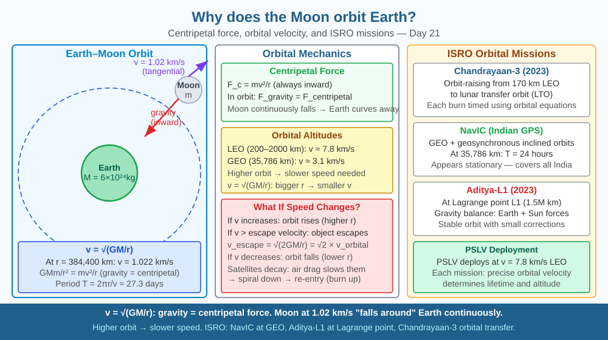

By the end of this lesson, you should be able to explain how centripetal force maintains an orbit, describe what would happen if the Moon's speed increased, and connect orbital mechanics to ISRO missions.
The Moon is falling toward Earth right now — pulled by gravity. Yet it's been "falling" for 4.5 billion years without getting any closer. How? And what determines the exact speed needed to maintain any orbit?
Centripetal force: For any object in circular motion, a force must act toward the centre: F_c = mv²/r
Gravity as centripetal force for orbits: F_gravity = F_centripetal GMm/r² = mv²/r Solving for orbital speed: v = √(GM/r)
At Moon's distance (r = 384,400 km = 3.84 × 10⁸ m): v = √(6.674×10⁻¹¹ × 5.97×10²⁴ / 3.84×10⁸) ≈ 1,022 m/s (1.02 km/s)
The Moon is continuously falling: Its tangential velocity carries it forward while gravity curves its path. At 1.02 km/s, the Moon falls exactly as fast as Earth's surface curves away — stable orbit.
Orbital period: T = 2πr/v = 2π × 3.84×10⁸ / 1022 ≈ 2.36×10⁶ s ≈ 27.3 days
Escape velocity: If v increases to √(2GM/r) = √2 × orbital velocity, the object escapes gravity entirely.
Geostationary orbit (for satellites): T = 24 hours → r = 42,164 km from Earth's centre (35,786 km above surface).
Think of the Moon's orbit as a cannonball fired horizontally from the top of an impossibly tall mountain. At low speed, the cannonball curves down and hits the ground. Fire it faster, and it travels further before curving down. Fire it at exactly the right speed, and the ground curves away beneath it at the same rate it falls — the cannonball never lands. That is an orbit.
The Moon doesn't need an engine or any push to stay in orbit. The perfect balance of forward speed and gravitational pull has been maintained since the Moon formed 4.5 billion years ago.
The included SVG shows Earth at the centre as a blue sphere, with the Moon as a smaller grey sphere on its circular orbit path. A dashed circle represents the orbital path, with arrows at four points showing the Moon's tangential velocity (always pointing sideways, tangent to the circle). Red arrows at each position point inward toward Earth's centre, labelled "gravity = centripetal force." A separate inset diagram shows the cannonball-from-mountain analogy: three projectile paths, the slowest landing nearby, the medium-speed one landing farther, and the fastest curving parallel to Earth's surface in orbit. Numbers label the Moon's orbital distance (3.84 × 10⁸ m), orbital speed (1.02 km/s), and orbital period (27.3 days).

Every ISRO satellite must achieve the correct orbital speed for its target altitude. PSLV inserts satellites into low-Earth orbit (LEO) at ~7.8 km/s. Chandrayaan-3 used a series of orbit-raising manoeuvres from 170 km LEO to lunar transfer orbit — each engine burn precisely timed using the orbital mechanics equations above. NavIC (India's GPS) uses satellites in geostationary and geosynchronous inclined orbits at ~36,000 km, requiring v ≈ 3.1 km/s. Getting this wrong by even 1 m/s would cause the satellite to slowly drift from its assigned slot, making it useless for navigation.
Tie a stone to a string (60 cm). Swing it in a horizontal circle. The string tension is centripetal force. Swing faster — feel greater centripetal force needed and the string become more taut. Release the string — the stone flies off tangentially (inertia, not outward). This is exactly what would happen if gravity "switched off": the Moon would fly off tangentially into space, not radially outward. The string represents gravity in the orbit analogy. Notice also that the faster you swing, the harder it is to maintain the circular path — matching the equation F_c = mv²/r, where increasing v demands more centripetal force.
The Lagrange points are 5 positions where the gravitational forces of two large bodies (like Earth and Sun) exactly balance, allowing a small object to be stationary relative to both. L1 (between Earth and Sun, 1.5 million km from Earth) hosts the DSCOVR and Aditya-L1 solar observation satellites. India's Aditya-L1 mission (2023) placed India's first solar observatory at L1 to study the Sun's corona — the origin of solar wind that affects Earth's magnetosphere and satellite operations. Getting to L1 required careful use of Earth's and Sun's gravity — orbital mechanics at its finest.
Predict: If ISRO engineers accidentally programmed a satellite to orbit at 7.9 km/s instead of the correct 7.8 km/s at LEO altitude, what would happen to its orbit over the following hours? Would it rise, fall, or stay the same? Explain your reasoning using the relationship between orbital speed and altitude.
What keeps the Moon in its orbit around Earth rather than flying off into space?
Correct answer: C
Why is understanding the gravitational mechanism of orbit more useful than just knowing the Moon circles Earth?
Correct answer: C
If the Moon's orbital speed were suddenly increased significantly, what would you predict?
Correct answer: A
A new communications satellite is placed in a circular orbit at an altitude of 500 km above Earth's surface (Earth's radius = 6,400 km, G = 6.67 × 10⁻¹¹ N m² kg⁻², Earth's mass = 5.97 × 10²⁴ kg).
(a) Calculate the orbital radius r and then the required orbital speed v using v = √(GM/r). (b) The satellite's thrusters fire briefly and increase its speed by 200 m/s. Predict qualitatively what happens to its orbit — does it stay circular, rise to a higher orbit, or fall to a lower orbit? (c) ISRO wants this satellite in geostationary orbit instead (altitude ≈ 35,786 km). Without calculating, explain why the orbital speed at geostationary altitude must be lower than at 500 km, using the relationship v = √(GM/r).
The Moon is gradually spiralling away from Earth — at about 3.8 cm per year. This happens because tidal friction from the Moon's gravity slows Earth's rotation very slightly. By conservation of angular momentum, the energy lost from Earth's spin is transferred to the Moon, pushing it into a slightly higher orbit. When the Moon first formed around 4.5 billion years ago, it was only about 24,000 km away — ten times closer than today — and would have filled a much larger portion of the sky, causing enormous tides hundreds of metres high.
The Moon does not float in place — it is perpetually falling toward Earth, but moving sideways so fast that it continuously misses, and this balance of gravitational pull and tangential velocity defines every orbit from artificial satellites to planets around the Sun.